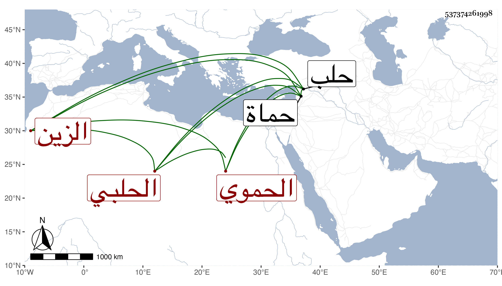

0902Sakhawi.DawLamic.ITO20230111-ara1.EIS1600.537374261998
Biography ID: 537374261998
684
عبد القادر بن الشهاب أحمد بن أبي بكر بن أحمد بن علي الزين الحموي الحلبي الماضي أبوه والآتي ابنه أحمد وأخوه المحب محمد ويعرف كهو بابن الرسام . ممن ولي كتابة السر بحلب ونظر جيشها وجواليها ، وصاهر العلم البلقيني على ابنته ، وكان مخمولا في حركاته يتحمل الديون الكثيرة ولا يحصل في ولاياته على طائل . مات بحماة سنة بضع وستين بعد أخيه .
